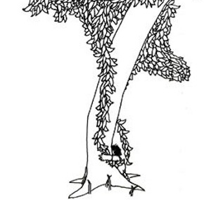

Once there was a tree...
and she loved little boy.
And every day the boy would come
and he would gather her leaves
And make them into crowns and play king of the forest.
He would climb up her trunk
and swing from her branches
and eat apples.
And they would play hide and go seek
And when he was tired, he would sleep in her shade.
And the boy loved the tree...
very much.. And the tree was happy.
But time went by.
And the boy grew older.
And the tree was often alone.
Then one day the boy came
to the tree and the tree said:
"Come, Boy, come and climb up my trunk and swing from
my branches and eat apples
and play in my shade and be happy."
"I am too big to climb and play," said the boy.
"I want to buy thing and have fun. I want some money.
Can you give me some money?"
"I'm sorry" said the tree, "but I have no money.
I have only leaves and apples.
Take my apples, Boy, and sell them in city.
Then you will have money
and you'll be happy."
And so the boy climb up the tree and gathered her apples
and carried them away.
And the tree was happy...
But the boy stayed away for a long time...
and the tree was sad.
And then one day the boy came back and the tree shook with joy,
and she said:
"Come, Boy, climb up my trunk and swing from my branches
and be happy."
"I am too busy to climb trees," said the boy.
"I want a house to keep me warm," he said.
"I want a wife and I want children, and so I need a house.
Can you give me a house?"
"I have no house" said the tree. The forest is my house,
but you may cut off my branches and build a house.
Then you will be happy"
And so the boy cut off her branches and carried
them away to build a house.
And the tree was happy...
